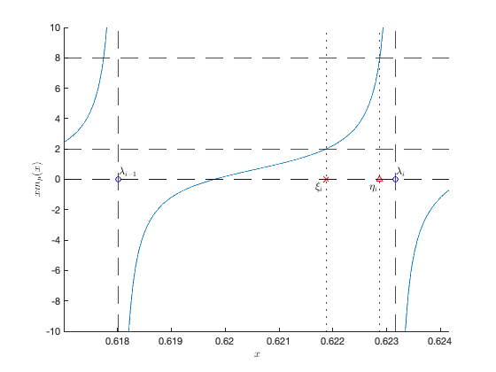

Section 3.5 Practical course material 1: The Wasserstein covariacne distance estimation
This page contains simulations of Practical course material 1 in Section 3.5.
Contents
Visualization of behavior of 
close all; clear; clc coeff = 3; p = 100*coeff; n1 = 300*coeff; n2 = 900*coeff; c1 = p/n1; c2 = p/n2; rng(928); Z1 = randn(p,n1); Z2 = randn(p,n2); eig_C1 = [1,2,4]; eig_C2 = [1,3,5]; C1 = diag([eig_C1(1)*ones(p/3,1); eig_C1(2)*ones(p/3,1); eig_C1(3)*ones(p/3,1)]); C2 = diag([eig_C2(1)*ones(p/3,1); eig_C2(2)*ones(p/3,1); eig_C2(3)*ones(p/3,1)]); X1 = sqrtm(C1)*Z1; X2 = sqrtm(C2)*Z2; SCM1 = X1*(X1')/n1; SCM2 = X2*(X2')/n2; SCM = SCM1\SCM2; eigs_SCM = eig(SCM); eigs_SCM = sort(eigs_SCM); m = @(x) sum(1./(eigs_SCM-x))/p; x_m = @(x) x.*m(x); tol1 = 1e-3; index_eigs_SCM = 50; zoom_eigs_SCM = linspace(eigs_SCM(index_eigs_SCM)-tol1,eigs_SCM(index_eigs_SCM+1)+tol1,1000); tol2 = 1e-4; zoom_eigs_SCM(zoom_eigs_SCM<=eigs_SCM(index_eigs_SCM)+tol2 & zoom_eigs_SCM>=eigs_SCM(index_eigs_SCM)-tol2)=NaN; zoom_eigs_SCM(zoom_eigs_SCM<=eigs_SCM(index_eigs_SCM+1)+tol2 & zoom_eigs_SCM>=eigs_SCM(index_eigs_SCM+1)-tol2)=NaN; % numerical evaluation of eta and zeta xi = real(eig(diag(eigs_SCM) - sqrt(eigs_SCM)*sqrt(eigs_SCM')/n1 )); xi = xi(xi<eigs_SCM(index_eigs_SCM+1) & xi>eigs_SCM(index_eigs_SCM)); eta = real(eig(diag(eigs_SCM) - sqrt(eigs_SCM)*sqrt(eigs_SCM')/n2 )); eta = eta(eta<eigs_SCM(index_eigs_SCM+1) & eta>eigs_SCM(index_eigs_SCM)); figure hold on plot(zoom_eigs_SCM, x_m(zoom_eigs_SCM)); xline(eigs_SCM(index_eigs_SCM),'--k'); xline(eigs_SCM(index_eigs_SCM+1),'--k'); yline(0,'--k'); yline( (1-c1)/c1,'--k'); yline( (1-c2)/c2,'--k'); yline(0,'--k'); axis([eigs_SCM(index_eigs_SCM)-tol1 eigs_SCM(index_eigs_SCM+1)+tol1 -10 10]) xlabel('$x$', 'Interpreter', 'latex') ylabel('$x m_{\mu}(x)$', 'Interpreter', 'latex') plot(eigs_SCM(index_eigs_SCM),0,'ob'); text(eigs_SCM(index_eigs_SCM)+1e-5,.5,'$\lambda_{i-1}$', 'Interpreter', 'latex', 'FontSize',12) plot(eigs_SCM(index_eigs_SCM+1),0,'ob'); text(eigs_SCM(index_eigs_SCM+1)+1e-5,.5,'$\lambda_{i}$', 'Interpreter', 'latex', 'FontSize',12) plot(xi, 0,'xr'); plot(eta, 0,'^r'); text(xi-2e-4, -.5,'$\xi_{i}$', 'Interpreter', 'latex', 'FontSize',12) text(eta-2e-4, -.5,'$\eta_{i}$', 'Interpreter', 'latex', 'FontSize',12) xline(xi,':k'); xline(eta,':k');
Classical versus random matrix improved Wasserstein covariance distance estimator
close all; clear; clc p_loop = 2.^(1:9); n1 = 1024; n2 = 2048; nb_average_loop = 30; store_output = zeros(length(p_loop),3); % [population distance, RMT estimator, classical estimator] warning('off') for i = 1:length(p_loop) p = p_loop(i); C1 = toeplitz(0.2.^(0:p-1)); C2 = toeplitz(0.4.^(0:p-1)); tmp = zeros(3,1); for j = 1:nb_average_loop X1 = sqrtm(C1)*randn(p,n1); X2 = sqrtm(C2)*randn(p,n2); [RMTDistEst,ClassDistEst] = RMTWassDist(X1,X2); tmp = tmp + [trace(C1 + C2 - 2*sqrtm( sqrtm(C1)*C2*sqrtm(C1) ))/p; RMTDistEst; ClassDistEst]/nb_average_loop; end store_output(i,:) = real(tmp); end disp('Performance of different estimators:') output_str = sprintf('%d \t %f \t %f \t % f \n',[p_loop', store_output]'); disp(output_str)
FUNCTIONS
Code from https://github.com/maliktiomoko/RMTWasserstein
function [RMTDistEst,ClassDistEst] = RMTWassDist(X,Y) %Function that compute the Wasserstein distance between Gaussian centered %distribution based on the article Random Matrix-Improved Estimation of the Wasserstein Distance %between two Centered Gaussian Distribution (Malik TIOMOKO & Romain Couillet) %Input Need the samples from the first class X of dimension p*n and the %samples from the second class Y of size p*n %Return the estimate est proposed in the article and the classical esthat %Define the dimensions p=size(X,1); n1=size(X,2); n2=size(Y,2); c1=p/n1;c2=p/n2; %Sample covariance estimate hatC1=X*X'/n1;hatC2=Y*Y'/n2; lambda=sort(eig(hatC1*hatC2)); m=@(z) mean(1./(lambda-z)); phi=@(z) z./(1-c1-c1.*z.*m(z)); psi=@(z) 1-c2-c2*z.*m(z); f=@(z) sqrt(z); eta=sort(real(eig(diag(lambda)-(1/n1)*sqrt(lambda)*sqrt(lambda)'))); zeta=sort(real(eig(diag(lambda)-(1/n2)*sqrt(lambda)*sqrt(lambda)'))); phi_test=@(z) z; psi_test=@(z) 1; phipsi=@(z) sqrt(z)/(c2); for i=1:length(lambda) phi_test=@(z) phi_test(z).*((z-lambda(i))./(z-eta(i))); psi_test=@(z) psi_test(z).*(z-zeta(i))./(z-lambda(i)); phipsi=@(z) phipsi(z).*sqrt((z-zeta(i))./(z-eta(i))); end % Distinguish the case where n1<n2 to the case where n1>n2 if eta(1)<zeta(1) my_eta=zeta; my_zeta=eta; else my_zeta=zeta; my_eta=eta; end other=@(z) 2*sum(1./(z-zeta))-2*sum(1./(z-lambda)); integrand_real=@(z) (1/(2*pi))*2*f(-(phi(z)./psi(z))).*other(z).*(psi(z)/c2); %Computing the second term (real_integral) real_integral=0; for i=1:length(my_zeta) real_integral=real_integral+integral(integrand_real,my_zeta(i),my_eta(i)); end %Computing the first term (pole in lambda) pole=2*(sqrt(c2/c1))*sum(sqrt(lambda))/c2; esty=pole+real_integral; RMTDistEst=(1/p)*trace(hatC1+hatC2)-2*esty; %Distinguish the case n1=n2 if n1==n2 RMTDistEst=(1/p)*trace(hatC1+hatC2)-2*(sum(sqrt(lambda))-sum(sqrt(zeta)))*(2*n1/p); end %Classical estimate ClassDistEst=trace(hatC1 + hatC2 - 2*sqrtm( sqrtm(hatC1)*hatC2*sqrtm(hatC1) ))/p; end
Performance of different estimators: 2 0.011032 0.010508 0.011200 4 0.017507 0.016482 0.017838 8 0.020819 0.021396 0.024074 16 0.022476 0.023510 0.028822 32 0.023304 0.023625 0.034208 64 0.023718 0.024022 0.045175 128 0.023925 0.024155 0.066442 256 0.024029 0.024285 0.109084 512 0.024081 0.024683 0.195589